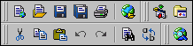
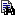

D e r E d i t o r
Steuerung

Die Icons auf dieser Leiste dienen dazu, Funktionen, die sonst unter Menüpunkten aufgelistet sind, schneller zu erreichen.| Erstellt ein neues Dokument auf Basis der definierten Vorlage. | |
| Öffnet ein beliebiges Dokument. | |
| Speichert das aktuelle Dokument. | |
| Speichert alle geöffneten Dokumente. | |
| Druckt das gerade aktive Dokument. | |
| Öffnet ein Dokument » aus dem Internet. |
| Ruft einen Dialog auf, aus dem » Plugins ausgewählt werden können. | |
| Listet » frei definierbare Anwendungen auf. |
| Schneidet den markierten Text aus und kopiert ihn in die Zwischenablage. | |
| Kopiert den markierten Text in die Zwischenablage. | |
| Fügt einen Text aus der Zwischenablage ein. | |
| Macht die letzte Aktion rückgängig. | |
| Widerruft die letzte Rückgängig - Aktion. | |
|  | Sucht nach einem bestimmten Text im aktuellen Dokument. |
| Ersetzt einen Suchtext durch einen anderen. |
| Vorschau in einem Browser. |